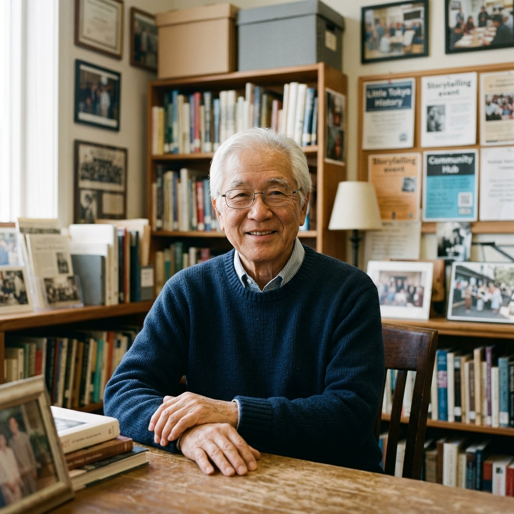

Preserving the Living Memories of Our Community
Welcome to my personal notebook and photographic archive. Here you will find first-hand chronicles of four decades in Little Tokyo, the founding of the Little Tokyo Service Center, and community stories accompanied by archival photographs—both alongside the text and gathered in detailed photographic appendixes.

Bill Watanabe
Community Organizer, Social Worker & Storyteller
Featured Chronicles
Selected memoirs featuring side-by-side photographic callouts and archival records.
From the Photo Vault
Preserved documentary images ready to attach to stories or view in full resolution.
Stories & Chronicles
Memoirs, reflections, and oral histories from Little Tokyo and beyond.
Bill Watanabe in his archive study, Los Angeles.
About Bill Watanabe
Founding Executive Director, Little Tokyo Service Center
Bill Watanabe is a community leader, social worker, and lifelong advocate for the Japanese American and greater Asian American communities in Southern California. Born during World War II at the Manzanar War Relocation Center, Bill grew up in the San Fernando Valley and went on to complete his Master’s degree in Social Welfare at UCLA.
In 1980, Bill helped establish the Little Tokyo Service Center (LTSC), starting with a small bilingual information and referral program operating from a borrowed room with donated furniture. Under his 32 years of leadership as Executive Director until his retirement in 2012, LTSC expanded into a comprehensive social services and community development organization.
Today, Bill continues to write, document oral histories, and share stories of grassroots community activism, elder care, and historic preservation. This website serves as a living home for those stories, paired with documentary photographs from his personal archives.
Key Milestones & Community Legacy
Co-founded the Little Tokyo Service Center (LTSC) to provide bilingual social services for low-income seniors and immigrant families.
Pioneered community-driven affordable housing development in Little Tokyo, creating preservation models for historic hotels.
Helped launch the National Coalition of Asian Pacific American Community Development (National CAPACD).
Retired as Executive Director of LTSC after 32 years of service; continued writing memoirs and lecturing on community building.
Preserving oral histories, archiving historical documents, and authoring reflective personal essays for future generations.